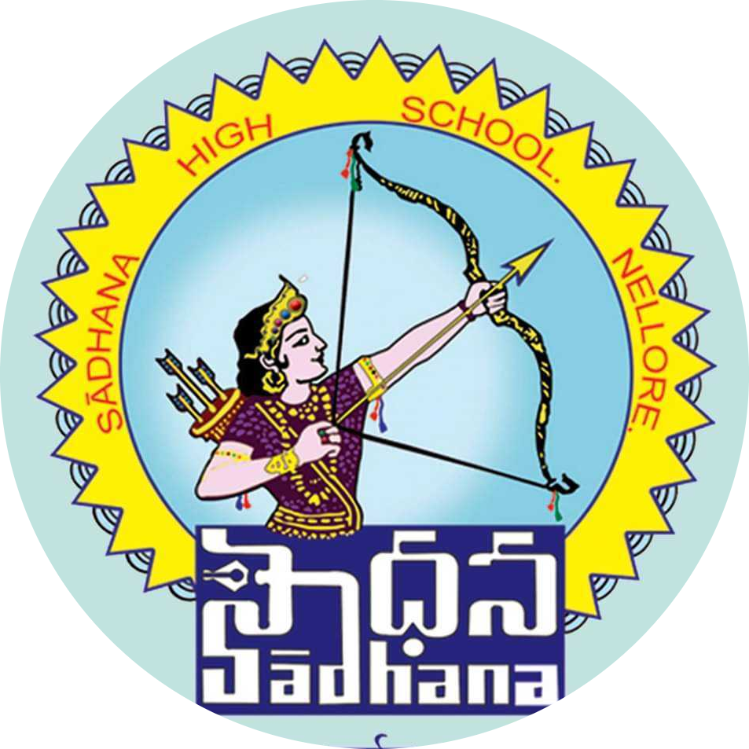
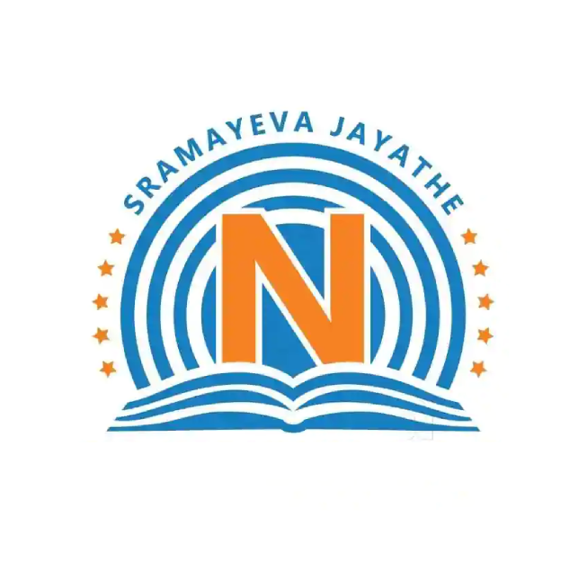

I am very Passionate about coding and solving problems.I
usually keep my ecosystem filled with humor and joy. I am naturally an
introvert, but if I get connected with people and start working I can
produce miracles. Coming to the technical field, I know how to code in 8 Programming
languages. I've done a project using front end within 100 days. I‘ve also done a mini
project(Todo App) and a final project(Drive it) using Ruby on Rails. Since
I’ve learned Ruby on Rails myself within two months, I am confident to say I
can learn any new language given to me.
Educational Qualification

This is the place where my childhood had blossomed.This is my school, Sadhana High School.
Here I’ve completed my 10th with 10/10 Grade in the year 2018-2019.

This is the place where I’ve learnt how to behave with others. Here I’ve completed
my 12th with 946/1000 Marks in the year 2019-2021.
This is the place which helped me to improve my Technical skills and
Life Skills. Here my coches helped me to learn how to code in 8 languages and
I have done two major projects using these languages.